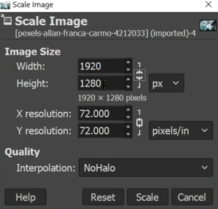
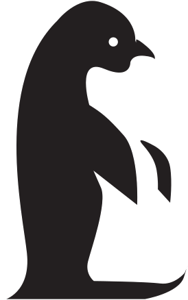
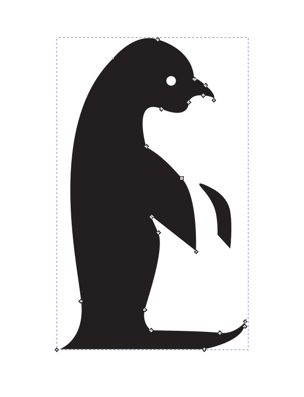

Assignment 1
Assignment 1 is to create a website on Github to document the exercises and assignments for this module, EP1000.
This assignment being the first time using HTML and CSS, the process of having a presentable website hosted on the internet is a long one.
I'll be using Visual Studio Code for code writing and Github alongside Github Desktop to push commits and host the website.
Exercise 1
Assignment 1 involved using raster tools to edit a raster image of myself in the "About Me" portion of the website using GIMP.
1. Choose one of your selfies or photo and create an About Me page profile image.
That's rather self explainatory... onto the next step!
2. Remove the background of the image.
I tried a few ways to do this, such as Fuzzy Select, Layer Masks, Foreground Select and Free Select.
Fuzzy Select wouldn't play well with the hair on the image, so after a few attempts, I decided to drop it.
Layer Masks would result in patches of my skin being transparent due to the harsh lighting, the solution to remedying this is relatively complicated and I decided to leave this for the time being.
Foreground Select/Free Select are relatively similar in that you mask out the area that you want selected before inverting the selection and deleting it.
I used the free selection tool as I was more confident in using it to capture the details around the hair in the image.
Thus, this is the result!

3. Substitute with any scene or keep it transparent.
I decided to keep it transparent.
4. Resize to a width of 1280 pixels.
Using the "Scale Image" tool located in the "Image" tab of the toolbar, I am able to directly edit the width of the image while maintaining its original aspect ratio.
Assignment 2
1. Create and design a logo or initial for yourself.
I'll be using a logo that I've been using for a while now. This file was originally created in raster a long time ago so I'm not sure where the original file is to show in detail how it was created. However, this file will be converted into a vector in this exercise.
2. Trace the outline of the design to form a vector art
Due to the simple black and white nature of the logo, I am able to use the feature "Trace Bitmap" to have the software automatically vectorize the image for me.
It's also already in black and white, so I'm skipping Step 3.
Here's the final vectorised logo!